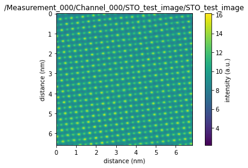

Read TEM Image¶
Author: Gerd Duscher
Date: January 2021
A fast introduction into how to read an NSID formatted HDF5 files to SIDpy datasets.
Start with standard imports:
[1]:
# Ensure python 3 compatibility:
from __future__ import (absolute_import, division, print_function,
unicode_literals)
import sys
import warnings
import h5py
import matplotlib.pylab as plt
import numpy as np
# we will also need a sidpy package
try:
import sidpy
except ModuleNotFoundError:
!pip3 install sidpy
import sidpy as sid
sys.path.append('../')
import pyNSID
warnings.filterwarnings("ignore", module="numpy.core.fromnumeric")
warnings.filterwarnings("ignore", module="pyNSID.io.nsi_reader")
# Download test h5 file
!wget -qq -O 'STO_test_image.hf5' 'https://github.com/ziatdinovmax/pyNSID/blob/master/notebooks/00_basic_usage/STO_test_image.hf5?raw=true'
'wget' is not recognized as an internal or external command,
operable program or batch file.
Reading pyNSID file into sidpy.Dataset object(s)¶
Let’s read a test image into a sidpy Dataset
[3]:
reader = pyNSID.NSIDReader('./STO_test_image.hf5')
sid_dataset = reader.read()[0]
assert isinstance(sid_dataset, sidpy.Dataset)
sid_dataset.plot()

The dataset we read is an enhanced dask dataset.
[4]:
print(sid_dataset)
sid_dataset
sidpy.Dataset of type IMAGE with:
dask.array<generic, shape=(470, 453), dtype=float64, chunksize=(470, 453), chunktype=numpy.ndarray>
data contains: intensity (a.u.)
and Dimensions:
y: distance (nm) of size (470,)
x: distance (nm) of size (453,)
[4]:
|
HDF5 File Structure¶
To see where the dataset is exactly stored in the hdf5 file we can fiew the file tree of this hierarchical data structure. For convenience the reference to the h5py.Dataset is stored in an attribute h5_dataset in the sidpy.Dataset.
Each sidpy dataset is stored in a h5py.Group with it’s name which contains a h5py.Dataset with the same name (here STO_test_image). We also have the x and y dimensions stored in that group.
[5]:
h5_file = sid_dataset.h5_dataset.file
sidpy.hdf_utils.print_tree(h5_file)
/
├ Measurement_000
---------------
├ Channel_000
-----------
├ STO_test_image
--------------
├ STO_test_image
├ __dict__
--------
├ _axes
-----
├ x
├ y
Close the hdf5 file¶
[6]:
sid_dataset.h5_dataset.file.close()
HDF5 File Access¶
The file can also be opened as a pure hdf5 file
[8]:
h5_file2 = h5py.File('./STO_test_image.hf5', mode='r')
h5_group = h5_file2['Measurement_000/Channel_000']
print(h5_group.keys())
<KeysViewHDF5 ['STO_test_image']>
[9]:
for key in h5_group:
print(h5_group[key].keys())
<KeysViewHDF5 ['STO_test_image', '__dict__', '_axes', 'x', 'y']>
Close the hdf5 file¶
[11]:
h5_file.close()
[ ]: